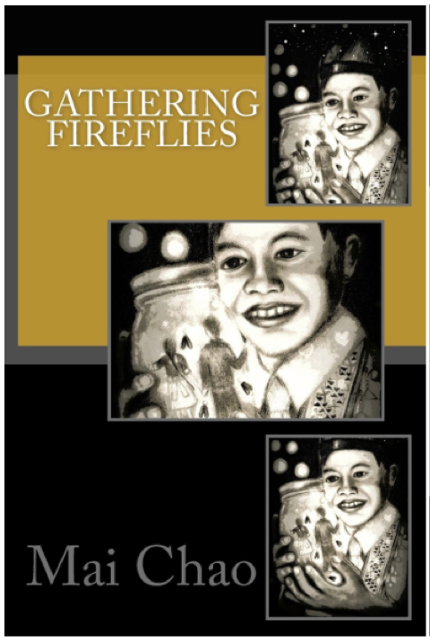

Gathering Fireflies by Mai Chao Duddeck
Dreams are like fireflies… Kashia is 13 years old and only hears bits and pieces of his Hmong heritage. His curiosity and quest for knowledge are awakened when he interviews his grandparents, Mai Lia and Ginu, about their lives in the old country. Kashia learns about his family’s hardship after the Vietnam War in Laos, the crowded refugee camps in Thailand, and the struggles of life in the United States. His heart begins to change as his eyes are opened to what it means to survive, belong to a family, and have a cultural identity. This verse novel combines each character’s separate voice into one delightful melody. It is a song of hope for the future and reverence of the past.
Paperback, 218 pages, 6x9, English
ISBN: 9781502540195
Purchase from Amazon or contact Mai Chao.
Reviews
This is a beautiful story, written from the multiple perspectives of Son, Mother, Grandmother, and Grandfather. Each "storyteller" brings their unique perspective which draws the reader deeper and deeper into their rich and complex lives. The author beautifully weaves their stories together to form an inter-generational, intercultural story of love and survival.
By: Lynette Lo.
I love, love, love this book. It is beautifully written, and the characters come alive as you follow their journey (and gain plenty of historical knowledge) from page to page. I will be using this in my classroom with my middle school students, but I loved it for myself as a reader as well.
By: Stephanie Sullivan.
This beautifully written book touched my heart with the multi-generational stories interwoven through a very fluid verse. The book provides the reader with a very realistic and moving account of the history of the Hmong/American connection, while giving us a glimpse into the hopes, dreams, strengths, sorrows, fears, and cultural dilemmas that they have experienced. The style in which it was written provides a very quick read, and I particularly liked the older characters telling their stories in a slightly broken English, which provided even more depth to those characters. I highly recommend this book!
By: Julie M.